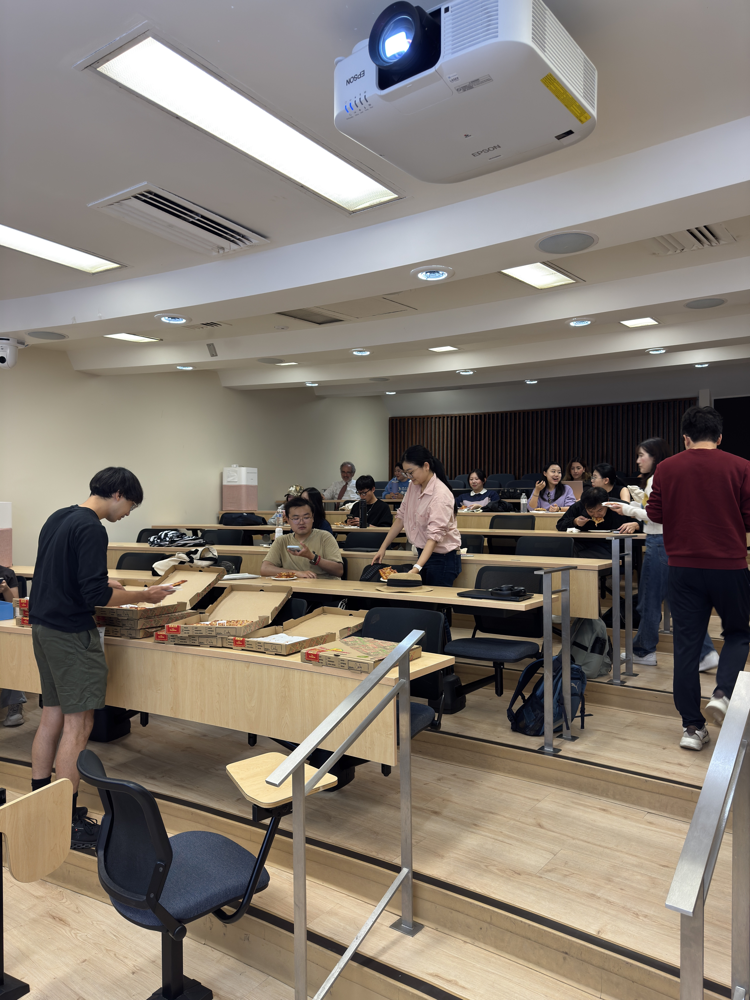
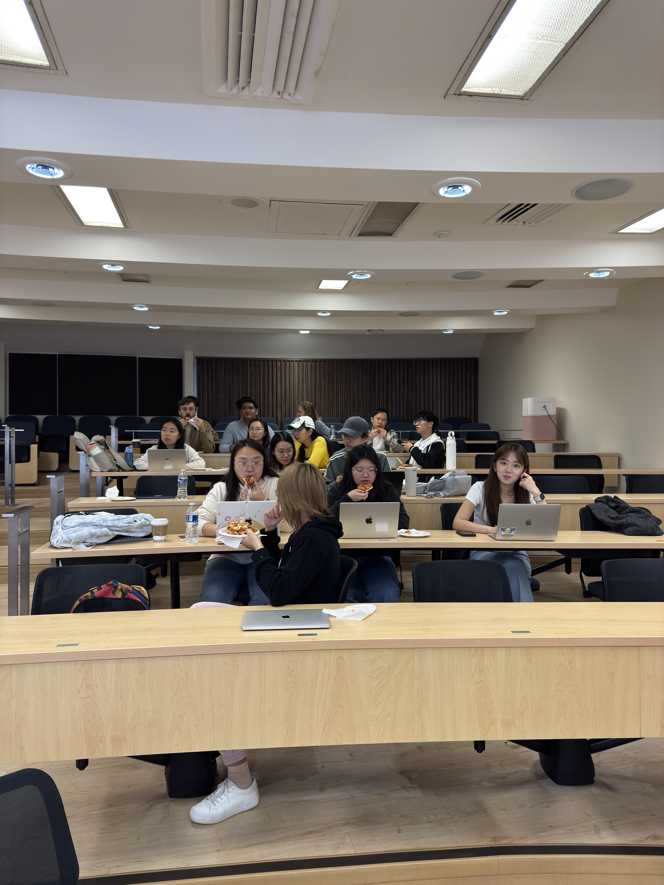
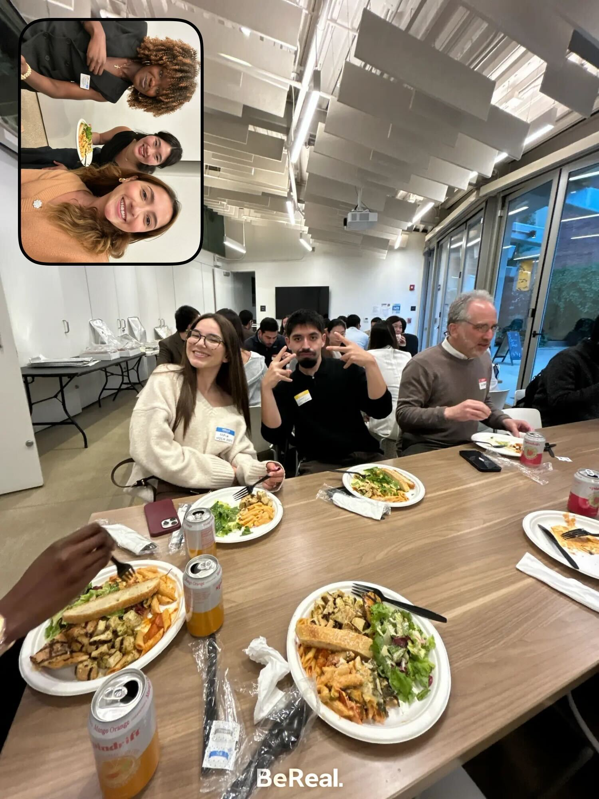

Events
RSVP to Upcoming Events and follow us on Instagram for up to date detail.
Recurring Events

Events hosted during the Fall and Winter Quarters that brings biostatistics students and faculty together for informal seminar events over lunch. In the past, we have hosted Internship Panels, Student Research Talks, LinkedIn 101, and Faculty Flash Talks. Interested in helping or have an idea to feature? Contact Cindy Pang and Darren Lin.

A quarterly student event that gives biostatistics students an opportunity to get updates on BSA projects over snacks, and a space to voice concerns and feedback for BSA to advocate for within our department.

Our annual Alumni Mixer & Panel gathers students, faculty, and alumni for a night of networking and food! Alumni are given opportunities to share their career advice and connect with current students.